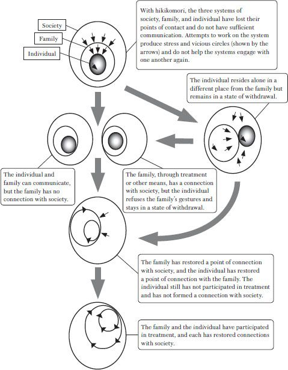

8. 治疗的总体进展
最终目标是什么？
在本书的前半部分，我写到了茧居系统，在这个系统中，个人、家庭和社会系统的相互接触丧失。这种系统涉及到一种恶性循环：情况越糟糕，家里蹲状态就越有可能稳定下来并长期存在。这不仅仅是对个人的束缚；在个人躲避社会机构的同时，社会机构也在把握着个人和家庭。家人也被深深地卷入茧居系统。
把社交退缩看作一个系统有很多好处，但最大的好处之一可能是，它可以让我们用一种能够解释问题和治疗进展的方式将其图表化。这种模式可以帮助我们回答一些问题：问题点在哪里？是个人、家庭、社会，还是三者之间的联系点？我们应该从哪些方面入手，让整个系统脱离恶性循环？以图解的方式思考家里蹲可以帮我们以易于理解的方式解释这些问题。
图4可有效帮助评估当前治疗水平的进展情况。例如，三个系统之间的关系呈现阶梯模式：一种状态是个人回避家人，家人也不参与治疗；另一种状态是家人来咨询，但不告诉个人；还有一种状态是家人来咨询，但个人虽然知道，却不能（或不愿）来见治疗师；还有一种情况是个人前来接受治疗，但家人拒绝接受治疗。尝试将这些状态组织起来，并以这种模式来看待它们是非常有用的。

在短期内，通过治疗和咨询，我的目标是：家庭和个人都能不间断地参与治疗，家人也能以平和的心态谈论治疗。根据我的经验，如果治疗师能够帮助个人和家庭达到这种状态，那么个人的康复只是时间问题。最起码，情况会开始好转，茧居系统也会开始脱离。
反之，如果所有各方都为治疗做出了持续努力，但患者仍然难以参与社会活动，那么围绕治疗的沟通就存在某种问题。如果家庭中哪怕有一个人对治疗有负面看法，都会造成很大的障碍。如果家人对治疗过于热心，也会造成问题。例如，如果家人变得不耐烦，四处奔波，寻找比他们正在接受的治疗更好的治疗方法，从一家医院或治疗师跳到另一家医院或治疗师，那么过度热心就会成为一个问题。过度热心也可能是一个问题，如果家人过度投入家庭活动或自己的个人咨询。在这两种情况下，家人完全抛开了孩子的意图。当面对孩子顺从的反应时，这样的家人往往会想：“我们一直在做这些努力，为什么孩子没有反应呢？”除非能够恢复个人与家庭之间的互惠沟通，否则就不可能成功治疗家里蹲患者。要达到我刚才提出的治疗目标，并不是一件特别容易的事情。我并不是简单地悲观。如果有的话，我是在强调一个事实——也就是说，如果一个人持续、顽强地付出某种特定的努力，这种努力必然会得到回报。
恢复的两个步骤
让我来谈谈治疗的一般过程。图4显示了“茧居族”系统在咨询过程中的变化。
要帮助一个人从慢性家里蹲状态中恢复过来，需要哪些步骤？最基本的步骤有两个。首先是尝试恢复与两个相邻系统的连接点。换句话说，必须恢复个人与家人、家庭与社会之间的连接点。一旦做到了这一点，就可以迈出第二大步：恢复个人与社会之间的连接点。
当我这样写这些步骤时，它们似乎不言自明、显而易见，但与人们的预期相反，在现实中，人们往往并不遵循我刚才给出的顺序。我们经常会看到一些家人试图在个人和社会系统之间建立一种关系，但在这个过程中却失败了。其中一个例子就是，有些家人强迫孩子去外省的寄宿学校上学。有时，一些家人租了一套公寓，强迫孩子独自在外生活。还有一些时候，家人会为孩子找到一份住家工作，然后强迫孩子接受这份工作。在这种情况下，孩子看似步入正轨，但过不了多久，孩子就会心力交瘁，以失败告终，只留下对家人挥之不去的不信任。要避免重蹈覆辙，最可靠的办法就是恢复与邻近系统的连接点。
让家庭系统和社会系统相互配合是相对容易的。在具体情况中，当父母开始去咨询中心接受治疗或参加大家庭会议时，就会出现这种情况。一个家人不应试图在家里单独处理直接问题，而应采取开放的态度，考虑与社会建立更广泛的联系。
父母的角色最重要
接下来要解决的问题是如何让家庭系统和个人系统协同工作。最大的问题是家里蹲个体和家庭如何才能恢复连接点？具体来说，在这个阶段，个人与家庭之间的对话成为可能，家人努力与茧居族孩子建立更密切、更坦诚的交流。根据我的经验，这个阶段是最困难的，也是最需要时间的。长期处于家里蹲状态的孩子甚至避免与家人见面。有时，他们根本不说话，而是把想法写在纸条上。尽管如此，如果家人试图跳过这个阶段，无论隔离状态有多深，治疗都不会取得良好的进展。相反，我们对这一阶段的关注程度在很大程度上决定了未来治疗的进展。这就是这个阶段的重要性。
这一阶段之所以如此困难，不仅仅是因为问题涉及个人与家庭之间的关系。在接受治疗的过程中，家庭成员之间价值体系的差异以及这些差异所引起的摩擦都会成为一个问题。例如，我们经常会看到这样的情况：只有母亲热衷于治疗，而父亲和兄弟姐妹却不太感兴趣，从而招致“懒惰”的批评。当然，也有角色颠倒的情况。
值得再次强调的是，在努力解除“茧居族”系统时，父母扮演着最重要的角色。如果父母双方不能通力合作，就不可能指望孩子得到充分的康复（父母一方死亡或离婚的家人可以例外）。我记得在一个案例中，家里蹲一个年轻人的姐姐是唯一担心他的人，而父母却把所有的时间都花在了大喊大叫和试图刺激他采取行动上。不可避免地，只有这位姐姐来到了诊所。我对她说：“如果只有兄弟姐妹参与进来，通常对治疗没有特别大的帮助——至少对他没有帮助。你不应该为了你哥哥来咨询。如果有的话，你应该考虑自己的未来，并尽你所能去促进它。”妹妹接受了我的建议，从那以后，她就不再配合哥哥的治疗了。结果，父母别无选择，只好自己来了。虽然这只是一小步，但方向是正确的。实施治疗的医生别无选择，只能进行一系列持续、协调的协商，帮助每个人在康复的道路上迈出一小步又一小步。
当家庭内部存在重大分歧时，首先要确保至少在一定程度上全家人都愿意合作，然后再尝试让孩子参与沟通。我之所以说“在一定程度上”，是因为我们不能指望每个人都能始终站在完全相同的立场上。此外，一旦治疗似乎沿着正确的轨道进行，家长就会对治疗更加热心。最好每个人在开始治疗时都能明白以下三点：（1）家里蹲并不等同于“懒惰”；（2）治疗是康复的必要条件；（3）家人的配合也是必要的。
如果父母之间有太多的不和谐，尽管他们已经尽了最大努力，但仍无法达成共同的共识，那么我建议他们在开始对孩子进行治疗之前，先去做夫妻咨询。重要的是，父母不要害怕改变，要表现出处理棘手问题的意愿。态度的改变一定会让孩子感受到，并有助于取得积极的效果。
不要将家里蹲视为“懒惰”
一旦家人达成共识，并采取了我上述的态度，他们应该采取什么措施来对付他们的儿子或女儿呢？在此之前，我曾建议家人在试图与孩子打交道时一步一步来。这是因为，如果一个人试图突然在茧居系统中引入一个接触点，换句话说，如果一个人试图强迫沟通，那么这往往看起来只是这个家人在刻薄和试图刺激他们的孩子。首先，有必要充分调整家庭环境，然后逐步软化环绕家里蹲孩子并将其与家庭其他成员隔开的“保护墙”。
家庭的措施应根据家里蹲孩子状况的变化逐步推进。我之所以这样说，是因为家里蹲孩子一开始通常会拒绝周围所有人的努力。家人的首要任务是花时间一点一点地缓和孩子的抵触情绪。因此，首要目标是稳定孩子在家庭中的情绪。
大多数家里蹲者几乎没有朋友，也不会长时间外出。换句话说，家庭是他们唯一有归属感的地方。有必要让他们至少感到在家里自在，可以放松。这是向前迈出一步并努力恢复社会地位的必要前提。要做到这一点，就必须认识到儿子或女儿并不只是“懒惰”。
我们很难看到家里蹲的孩子在家庭中经历的所有烦恼和冲突；人们往往认为他们只是在虚度光阴，过着无忧无虑的生活。然而，家人往往无法想象孩子所经历的自卑、灰心和不足。
我以前解释过，大喊大叫和试图责骂一个人是有害的，“有理有据的争论”也没有什么帮助。以下是我所说的几种争论：“过了20岁，你就有责任出去工作。”“不工作的人不配吃饭。”“我们把你宠坏了，所以你才会变成这样，我们再也不宠你了。”“你已经到了可以自己挣钱的年纪，所以我们不会再给你零花钱了。”“除非我们严格对待你，否则你永远不会有出息。”
所有这些都是正直、正派的人应该说的话。这些论点没有一个是完全错误的。在现实中，这些话都是正确的，也许是太正确了，但它们所做的只是让家里蹲中的人更加尴尬，让他或她更加受伤。正如中井久雄指出的那样，在涉及青少年的精神病案例中，尤其需要尽量避免让他们感到尴尬。“斥责他们‘懒惰’”，或试图用“有理有据的论点”来恳求他们，只会让他们觉得自己被驱使着越陷越深。“说他们‘被宠坏了’、‘自私’或‘以自我为中心’也是同样的道理。”不言而喻，把一个人逼到墙角并不能帮助他或她变得更好。
最焦虑的人是家中的“家里蹲”。
尽管如此，家人往往还是无法消除他们的焦虑。例如，我经常听到这样的担忧：“如果我的孩子在家里感觉太舒服了，那么他就不会想离开，到外面的现实世界中去，不是吗？”这是有道理的，但要告诉真理的是，家人只有在没有充分理解儿子或女儿的感受时，才会提出这样的问题。
我们需要明白的是，没有人比处于“家里蹲”状态的人更害怕陷入“家里蹲”状态。我认为，这几乎适用于每种茧居族情况。无论他们在家里感觉多么自在，他们都会有一种挥之不去的焦虑感。
问题的关键在于，家人的忧虑也是家里蹲者正在经历的忧虑。尽管父母可能会认为“孩子根本不知道父母有多爱他们”，但孩子往往也有同样的价值观，而且比家人意识到的还要多。家人的说教和“有理有据的争论”似乎无法触及孩子，原因之一就在于此。几乎每个人都会在别人开始就他们已经知道的事情对他们进行说教时感到不快，并想要反驳。
家里蹲者也会对未来感到焦虑，对自己的现状感到遗憾，但却不知道如何去解决。他们不会无忧无虑地在家里闲逛，做自己想做的事情。他们既对自己失望，又觉得无法走向社会。在做任何事情之前，家人都必须理解他们，并对他们表示同情。
恢复与家人的信任关系
在第二步中，主要任务是逐步增加与家里蹲者交谈的机会，从而重建与家人之间的信任关系。在家里蹲的情况下，孩子与其他家庭成员之间的对话往往极其贫乏。经常有家人说，除了偶尔的说教，他们根本不知道该对自己的儿子或女儿说些什么。但这种贫乏的对话状态持续得越久，家庭内部的关系就会受到越严重的破坏，从而使治疗越来越难以展开。
我建议家人经常努力尝试与孩子交谈，同时确保在交谈过程中不啰嗦。重要的是不要放弃，要不断尝试，坚持不懈。如果没有回应，也不要强求。先从在家里的常规问候和其他小对话开始。如果孩子做出了回应，家人就应该一点一点地增加话题的范围。谈论正在发生的事情和孩子感兴趣的事情效果最好。谈论工作、学校、同龄人、婚姻和其他诸如此类的话题只会让孩子越来越感到自卑和不足，所以最好避免这些话题；但是，如果孩子提出这些主题，谈论它们也是可以的。事实上，这也许是可以自由谈论这些话题的唯一例外。我稍后会详细谈及这一点，但当孩子开始谈话时，应将其作为一个重要的机会。在这种情况下，无论谈话的主题是什么，家人都应尽力倾听。
当孩子开始说话时，注意他或她的表情和语气也很重要。家人如何小心谨慎地选词并不重要，但板着脸或用冷冰冰或拘谨的词语说话是没有用的。重要的是要注意采取一种能让孩子理解的态度。同样重要的是，不要让孩子感觉到家人的情绪和言语之间有任何矛盾。家庭成员不应该试图通过情感和行为来表达他们想说的话，而应该试着用语言来表达。当然，讽刺或间接攻击是严格禁止的。“与人打交道的基本原则是在真诚的基础上采取‘直截了当的策略’。”绕来绕去或迂回曲折地攻击孩子对治疗毫无帮助。如果有的话，那只会不必要地增加孩子对家人别有用心的怀疑，破坏家庭关系的稳定。
家人应该如何接受怨恨和批评？
一开始，当父母第一次努力进行沟通时，通常不会得到任何回应，或者更有可能的是，他们的姿态会遭到孩子的不解；但是，如果他们长期坚持下去，那么渐渐地，他们就会开始得到回应，孩子的态度也会开始变得更加灵活和柔顺。随着这种情况的发生，对话也会逐渐变得更加丰富和有意义。
当孩子开始与家人有更多的交谈时，孩子往往会说出各种出人意料的话，让家人感到惊愕和困惑。例如，孩子有时会对父母怀有一种隐秘的“怨恨”。他或她可能会说这样的话：
- 我现在之所以这么痛苦，都是因为你们。你们是我的父母，是你们把我养成了这样，所以你们有责任。
- 你强迫我去上学，而我真的不想去。
- 如果你当时把我送到专门的补习班，让我为上大学做好准备，那么我现在就不会落后这么多。
- 你甚至没有注意到别人都在欺负我，你根本不知道我过得有多艰难。
- 那时我们住在个可怕的地方，但你不让我们搬到别的地方。
- 我想回到过去，重读初中。我希望回到过去，重新来过。
当孩子对父母进行攻击——父母很可能认为这些攻击是不合理的，甚至是蛮横无理的。父母可能会发现自己想反驳或为自己辩解，说什么“这不是真的”或“这没有任何意义”。然而，重要的是不是谁对谁错，而是让孩子说出他或她想说的话，而不要打断。让孩子一吐为快，并倾听他的想法。家人不应该立即打断孩子的话并进行反驳，也不应该试图强行控制谈话并将其引向另一个方向。即使孩子的记忆并不准确，而且他对过去发生的事情显然有误认一定的了解，首先认真倾听他（她）的感受，看看是什么样的想法一直困扰着他（她），这才是有意义的。
当然，也有很多家人抱怨说：“我们的孩子总是反反复复地说着同样的话，我们已经受够了”。然而，这些家人往往没有让孩子把想说的话都说出来。安静地做一个好的倾听者，让一个处于家里蹲中的人说出他们想说的一切，是一件相当困难的事情。重要的不是“什么是对的”，重要的是充分了解家里蹲中的孩子一直以来的感受。即使孩子有不正确的记忆，也要耐心倾听，帮助他们消除这些记忆。在进行真正的交流之前，这实际上是任何家人都必须经历的一个不可避免的过程。
不过，我们也有必要认识到，“倾听”和让别人“拧你的脖子”完全是两码事。这一点看似显而易见，但人们往往倾向于把这两件事混为一谈。例如，在有些情况下，家里蹲者非常生气，开始要求道歉，甚至可能是经济补偿。作为一项基本原则，家人不应该向这种要求妥协。我假设认为，这种要求通常都是针对那些不愿意理会孩子抱怨的家人。家里蹲者之所以开始诉诸激烈的语言，要求道歉或经济补偿，是为了让家人倾听他们的抱怨。重要的是，孩子最终会觉得“我的家人听到了我的声音，听到了我的感受”。如果有可能让家里蹲的孩子有这种感觉，那么有时即使家人什么也不做，孩子的怨恨和要求也会逐渐消失。
真正的“接受”意味着什么？
在一个极端中，有些父母对家里蹲孩子的批评只是一味地反对；而在另一个极端中，有些父母对孩子过于认真地批评。这些父母发现自己陷入深深的悔恨之中，为自己教育孩子的方式和提供的环境而自责。然而，这种想法也是有问题的。即使父母对自己处理孩子成长或教育的方式有遗憾之处，过多地纠缠于过去的遗憾也会给有效治疗带来障碍。当我遇到这样的家人时，我会给他们这样的建议：“不要充满遗憾。只要反思一下哪里出了问题”。如果一个人反思出了什么问题，就能帮助他在将来出现类似情况时思考适当的措施。过度的后悔并不是好事，因为这会导致家人在需要做出果断反应时表现得优柔寡断，因而效果不佳。这样的父母最终会道歉，并一再做出赔偿，就好像他们是某种罪犯一样。这种行为于事无补。父母和家里蹲孩子最终都会变得越来越困惑。
要做到真正的“乐于接受”，就必须明确自己的出发点。一个善于接受的容器不是没有底线的，也不是没有边界的。这不是“乐于接受”的含义。一个无边无际、没有底线的容器只会让对方感到恐惧，害怕自己会被吞没。要做到乐于接受，就必须有一个“底”和一个“框”，如果容器看起来要破了，就应该果断地做出反应，避免这种危险。让我再重复一遍基本观点——父母必须表现出“接纳的姿态”，同时还要有一个“接纳的框架”，让茧居族孩子容易理解。
另一个必要条件是，一旦家人开始让家里蹲孩子参与治疗，就必须绝对保证他们会继续努力。一开始，所有家人都渴望帮助孩子接受治疗。他们经常去医院；他们完全按照医生的吩咐去做；他们参加和他们一样的人的家庭聚会；他们尽最大努力让自己的儿子或女儿参与进来。然而，当他们发现治疗需要很长时间，孩子的病情进展不快时，许多家人就会变得冷漠。有些家人一开始的态度是端正的，但渐渐地就停止了需要，这种情况并不罕见。要告诉真理的是，半途而废比什么都不做更糟糕。
也许仅从外表上看不出来，但茧居族孩子对家人的变化极为敏感。如果家人开始对他们做出不同的反应，他们肯定会注意到。但这并不意味着他们会直接完全按照家人的意愿做出改变。如果有的话，他们往往会冷眼旁观，试图衡量家人与他们接触的认真程度，以及家人是否会表现得善变。当家属放弃他们的努力时（通常是在他们齐心协力开始努力之后），就相当于家属说：“我们又放弃了你”。要想以理想的方式继续治疗，首先，家人必须意识到他们需要以一种悠闲的节奏进行治疗，这样孩子才不会感到压力；其次，家人一旦开始让孩子参与治疗，就应该甘心在半年或一年后不放弃。
我一直在说，最终目标是在孩子和家人之间开辟一条健康的沟通之路。具体是什么意思呢？经过对许多家庭的观察，我认为健康沟通的一个指标就是父母和孩子能够互相开玩笑。换句话说，他们之间有一种关系，可以在日常生活中自然地开玩笑。当家庭内部的关系重新协商成功后，这种关系就逐渐成为可能。要建立这种关系，一方面必须有适度的距离，另一方面必须有一定程度的熟悉。如果没有足够的距离，父母和子女之间就无法开玩笑，而试图开玩笑又会被怀疑“别有用心”，甚至可能爆发暴力行为。反之，如果双方都过于拘谨，也难以开玩笑。一旦家人与孩子之间有了适度、稳定的距离，每个人就有可能开始交流如何应对和克服家里蹲问题的看法。一旦建立了这种关系，双方就更容易达成理想的治疗关系。
玩“指责游戏”的问题
正如我在上文所写，家人必须通力合作，才能治疗家里蹲孩子。在治疗家里蹲时，家人的作用远比其他疾病重要。对于其他疾病，即使家人不完全配合，病人通常也能通过药物或个别心理咨询的帮助达到一定程度的改善。但是，如果没有家人的配合，几乎完全不可能治疗家里蹲。如果孩子不愿意接受治疗或行为不稳定、反复无常，没有家人的配合，就不可能治疗茧居族。
更准确地说，当我提到“家人”时，我真正指的是父母。父母的全面参与对治疗至关重要。事实上，其他家庭成员或亲戚的参与是不必要的，有时甚至是有害的。
父亲缺乏兴趣有时会成为一个问题，在这种情况下，治疗的责任往往完全落在母亲身上。如果父亲把一切都托付给母亲，情况会好一些，但通常发生的情况是，父亲偶尔会开始责骂孩子，或者试图用鼓舞人心的话或大喊大叫来刺激孩子。父亲通常认为他这样做是在履行父性的职责，但这种行为只会阻碍家庭治疗的进展。由于父亲白天通常忙于工作，母亲通常会在孩子的治疗过程中扮演重要角色。不过，根据我的经验，父亲越是热衷于治疗，孩子就越容易取得进步。最后，父母双方最好能就如何帮助孩子克服家里蹲这一问题达成共识，然后齐心协力实现这一目标。即使每个人都很难定期接受心理咨询，父母也应确保他们在孩子的治疗问题上意见一致、观点一致。有时可以通过家庭会议、学习小组或其他会议达成这种共识。
不幸的是，在严重家里蹲的情况下，父母之间的关系往往处于非常糟糕的状态，彼此无法顺利沟通。父亲可能会把问题归咎于母亲，坚持说：“是她把我们的孩子养坏了。”而母亲可能同样不愿意放弃立场，把问题归咎于丈夫，说：“他缺乏兴趣才是问题的真正原因。”然而，最重要的是，家人要避免试图找出“错在谁”。这种逻辑会适得其反。没错，问谁“有错”永远不会得到明确的答案，反而会造成巨大的伤害，而不是帮助治疗。最容易受到“指责游戏”影响的是家里蹲孩子。当父母为谁有错而争吵时，孩子很容易就会开始想：“我这样都是父母的错”，从而使情况变得更糟。
这看似是一种迂回的改善方法，但为了避免指责游戏和使情况变得更糟，父母必须重新考虑自己的夫妻关系。有时，夫妻双方可以通过相互交流来解决这些问题，但在某些情况下，对立可能需要进行心理咨询。无论如何，要使治疗有效，父母保持良好的夫妻关系至关重要。父母愿意处理和解决自己的不和，从而克服自己的问题，肯定会给子女带来对自己处境的希望。此外，正如我之前所说的，当家庭出现问题时，母亲和孩子往往会发展出与父亲隔绝的关系，这只会阻碍治疗。然而，如果母亲和父亲的关系密切，就可以防止不健康的封闭式关系的形成。
长期坚持
有时，当孩子处于严重的家里蹲状况时，父母根本不想去处理问题。事实上，情况越严重，父母就越可能有这种想法。这种态度在父亲中尤为常见。在一些案例中，无论母亲如何努力，父亲要么不予回应，要么只是重复说：“你自己想想办法吧。我可没辙”。父亲看似全神贯注于工作，但实际上他只是在逃避更大的问题，在工作中寻求庇护。换句话说，父亲处于自己的“家里蹲”状态。我们不得不批评这种态度缺乏想象力。真正的问题不在于“责任在谁”这个微不足道的问题，而在于从那时起应该采取什么措施来解决问题。如果父亲不立即采取主动行动，那么十年或二十年后，他仍将承担继续照顾自己孩子的责任，而那时孩子已经三四十岁了。这是正确的……即使退休后，孩子可能仍然是他的责任。如果父亲继续袖手旁观，无视眼前的问题，结果将是多么严重。
有些家长在面临长期困难时，会做出过于夸张的反应，说：“为了孩子能好起来，我什么都愿意做，什么牺牲都愿意做。”这也是一个问题。父母诚心诚意地寻求治疗是很重要的，但父母不应该抛弃一切，一心一意地投入治疗而忽视其他一切。这种行为有可能使治疗与家庭生活的其他部分分离，无法解决重要的根本问题。
即便如此，许多人，尤其是母亲，还是决定放弃一切来照顾自己的茧居族孩子，部分原因是出于赎罪的心理。我已经多次提到过这一点，但母子之间过于亲密的关系往往会阻碍治疗的进展。那么，为什么会经常出现这种关系呢？我认为，这是因为在孩子和母亲自己内心深处，都非常希望建立起这种关系。为孩子牺牲自己的甜蜜感觉有助于巩固过于亲密的关系。在这种情况下，自我牺牲和奉献就成了一种令人陶醉的毒药。家里蹲的孩子开始觉得“我不能没有妈妈”，这也向妈妈证实了“我的孩子不能没有我”。当然，这些感觉其实只是幻觉的感觉，但毒药的麻醉作用足够强烈，以至于两个人都开始觉得他们不能没有彼此。我想再说一遍：当一个人试图帮助孩子康复时，他应该克制自己，不要去实践这种“爱”。
如果父母真的想与孩子展开一场长期的、协调一致的战斗——这场战斗最终往往会变成一场消耗战——父母必须确定自己作为母亲和父亲的立场，各自在自己的世界里。父亲通常有自己的工作职责和家庭以外的交往，因此我接下来要说的对母亲来说尤为重要。母亲每天24小时与孩子在一起是不可取的。母亲应该确保自己有自己的工作——也许是兼职工作——和爱好。她不应该放弃在家庭之外的课程或学习。她不应该放弃与社会上的人交往。通过这些活动为自己创造时间，有助于母亲保持心理平衡。在很多情况下，母亲自己也不愿意离开家到外面去，但如果她下定决心走出去，这将有助于孩子认识到她是一个“独立的个体”。换句话说，孩子意识到母亲有一个独立于他或她的个体存在，并开始接受这一事实。这是治疗过程中极其重要的一步。